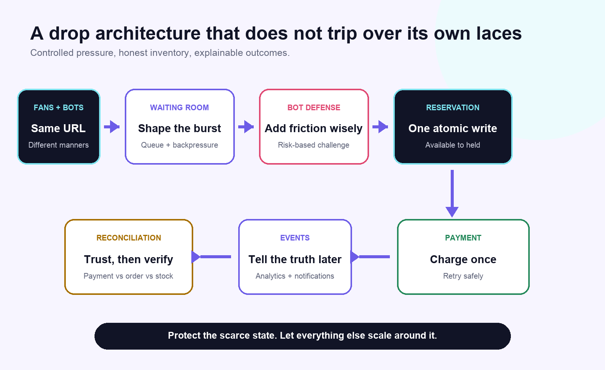

At 9:59:59, the system is peaceful. At 10:00:00, thousands of people ask the same question: Do you have my size? The database, which had been enjoying a quiet morning, is now starring in an action movie.
A limited sneaker release looks like retail, but underneath the tasteful product photography is a compact lesson in distributed systems. Demand arrives all at once. Inventory is scarce. Bots move faster than humans. Payments fail in creative ways. Every customer believes their click happened first.
In other words, it is Black Friday compressed into one HTTP request, with better colorways.
For a data engineer, this is a fascinating problem because the hard part is not simply handling traffic. It is preserving truth when many services, users, and retries are competing to change the same tiny piece of state: one pair of shoes.
The drop is a traffic jam wearing Jordans
Most systems receive traffic in curves. A sneaker drop receives a cliff. People do not wander in throughout the day. They synchronize their phones, refresh together, and attack the Buy button with the focus of a NASA launch team.
This changes the engineering question. Average requests per second becomes a comforting but nearly useless number. A service can handle Tuesday beautifully and still faint at exactly 10:00:01 on Saturday.
The useful questions are about the burst: How steep is the first ten seconds? Which operation becomes scarce first? Can the system absorb pressure without lying about inventory? What happens when downstream services slow down?
Scale is not only about serving more requests. Sometimes it is about deciding which requests are allowed to become expensive.
Static product pages can sit behind a content delivery network. Product photos can be cached. Even the launch countdown can be delivered from the edge. None of those requests need to wake the primary database.
The dangerous path begins when a customer asks to reserve inventory. That request changes shared state, so it cannot be solved by adding more cache and positive thinking. The architecture should keep the browsing path cheap and make the reservation path narrow, deliberate, and protected.
Add to Cart is not a blood oath
Imagine there is one pair of size 7 sneakers left. Two shoppers click at nearly the same moment. Both requests read available = 1. Both happily proceed. The system has now sold the same shoe twice, which is a bold inventory strategy and a terrible customer experience.
The fix is not a faster read. It is an atomic state transition. The database must perform one indivisible operation that says: reserve this item only if it is still available. One request changes the pair from available to held. The other receives an honest no.
Protect the smallest piece of truth that everybody wants to change.
For a drop, that is inventory by product, size, and location.A hold should also expire. If a shopper reserves a pair and disappears to compare resale prices, the inventory cannot remain trapped forever. A short time-to-live returns abandoned stock to the pool.
This creates another requirement: every reservation needs an identity. If the customer taps twice, the browser retries, or a gateway times out, the system should recognize the same intent instead of reserving two pairs. That is what an idempotency key provides. It turns “please do this again” into “please make sure this happened once.”
Bots have entered the checkout
Sneaker bots are distributed systems too. Unfortunately, they have chosen the dark side and excellent latency.
A bot can create accounts, rotate IP addresses, automate checkout, and submit requests at a speed no human thumb can match. Blocking one suspicious address is therefore less of a security strategy and more of a strongly worded suggestion.
Effective bot defense combines signals. Request timing, device fingerprints, navigation behavior, account history, payment reuse, and challenge outcomes can feed a risk score. High-risk requests receive more friction. Normal customers should not have to identify every traffic light in the state of Pennsylvania just to buy sneakers.
This is where data engineering becomes central. Fraud and bot models are only as useful as the event pipelines behind them. Events need consistent schemas, trustworthy timestamps, deduplication, and enough context to reconstruct a session. A model trained on messy telemetry will confidently detect whatever the logging bug taught it.
Fairness is a feature, not footwear
First come, first served sounds fair until “first” means the person with the lowest network latency, the fastest script, or a cloud server parked next to the retailer’s data center. A queue gives the system a chance to define fairness instead of accidentally outsourcing it to internet speed.
The waiting room absorbs the initial burst and admits customers at a rate the reservation service can safely handle. Each customer receives a signed queue token. The token proves their place and prevents someone from skipping the line by editing a number in the browser.
But every queue contains a policy decision wearing a technical costume. Should position be based on arrival time? Should the system randomize everyone who arrived before launch? Should loyal customers receive access? What happens to users with unstable connections? Engineering can implement any of these rules. It cannot decide which one deserves to exist.
A fair queue is not just an algorithm. It is a product promise that the architecture must be able to explain.
The queue has trust issues
Customers will forgive not getting a limited shoe. They are less forgiving when the queue jumps backward, checkout crashes, or a Sold Out banner appears after a payment authorization.
The queue experience therefore needs more than a spinner and motivational copy. It needs observable state. The customer should know whether they are waiting, admitted, holding inventory, paying, confirmed, or released. Internally, those same states should appear in logs and metrics with a shared correlation ID.
Good observability answers business questions, not just server questions. CPU usage matters, but so do reservation success rate, oversell attempts, hold expirations, payment-to-order mismatches, queue abandonment, and the percentage of inventory captured by suspicious clusters.
An HTTP 200 only means the server answered. It does not mean the customer got shoes, the payment matched the order, or the inventory ledger agrees with either one. HTTP 200, customer 0.

The sole of the architecture
A robust drop system can be summarized as six controlled promises. First, serve the easy traffic at the edge so browsing does not compete with checkout. Second, shape the burst with a waiting room, rate limits, and backpressure. Third, reserve inventory atomically so one state change decides who owns the temporary hold. Fourth, carry idempotency keys across reservation, payment, and order creation so retries are safe. Fifth, publish events only after truth is committed because notifications can be asynchronous but inventory cannot be imaginary. Sixth, reconcile payments, orders, and stock because distributed systems always leave a few crumbs in the shoebox.
That last step is easy to overlook. Services can disagree even when each one behaves correctly. A payment may succeed just as an order request times out. An event may be delivered twice. A hold may expire while a delayed callback is on its way. Reconciliation jobs find these mismatches and either repair them automatically or route them for review.
Event-driven architecture helps separate the immediate purchase decision from slower follow-up work. Once an order is durably committed, events can trigger confirmation emails, loyalty updates, analytics, and warehouse workflows. A transactional outbox or equivalent pattern keeps the database write and event publication from becoming two unrelated promises.
The real product is trust
The most interesting lesson from sneaker drops is not how to survive traffic. It is how technical choices become visible as fairness.
A queue policy decides whose time matters. A reservation transaction decides whether inventory is truthful. An idempotency key decides whether a retry becomes a duplicate charge. An observability pipeline decides whether support can explain what happened. These are implementation details right up until they become someone’s Saturday morning.
That is why I like this problem as an interview conversation. It connects data engineering, distributed systems, product judgment, and human behavior. The database is not protecting a row. It is protecting the credibility of the experience.
I may still take the L on release day. Limited inventory is limited inventory. But if I take the L, I at least want the logs to make sense.
That is my kind of sole searching.